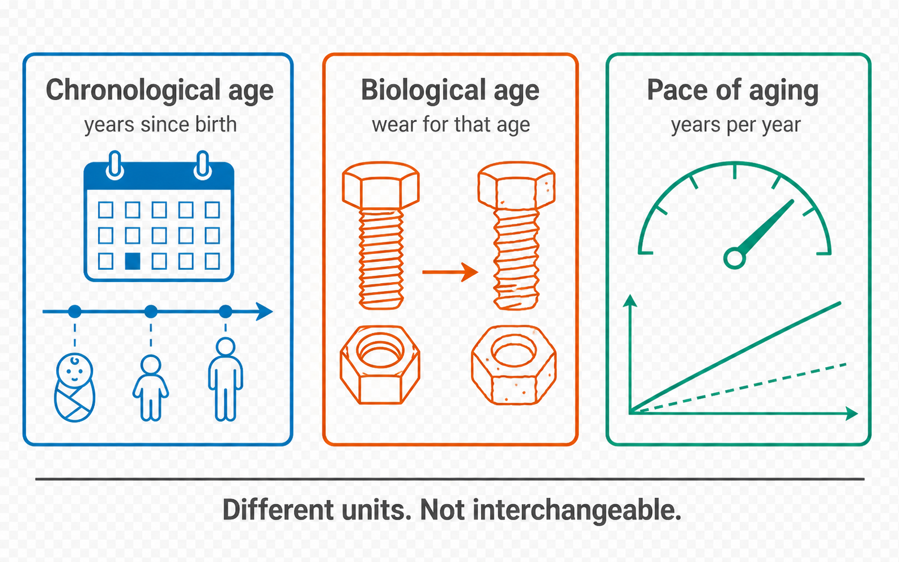
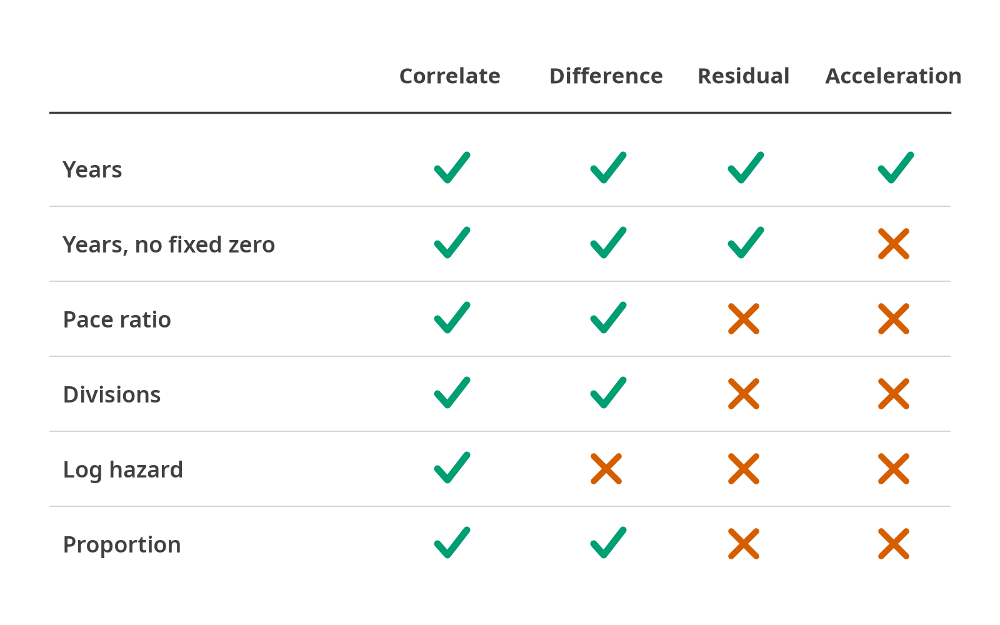

What a score means
Training targets, units and the operations each scale admits
The clock catalogue
178 clocks, in three availability groups. Availability is about redistribution rights, not about whether the algorithm works.
| Availability | n | What you do |
|---|---|---|
bundled |
69 | Nothing. Sixty-six ship a weights file; PhenoAge, KDM and homeostatic dysregulation are formulas with none to ship. |
untraced |
52 | Catalogued, but no primary source for the numbers has been established yet, so nothing is bundled. |
licensed |
57 | Obtain a coefficient file and register it; the numbers are research-use-only. DunedinPACE and five PC clocks import from the authors’ files and reproduce the authors’ code; the composite architectures (GrimAge, PCGrimAge, SystemsAge) are not implemented yet. |
fa.registry.load().filter(availability="bundled")Two licensed families can be imported from the authors’ own files, which then score exactly as the authors’ code does: DunedinPACE from an installed DunedinPACE package, a source checkout or an .rda (fa.registry.load().import_dunedinpace(path); R: import_dunedinpace()), and the PC clocks from CalcAllPCClocks.RData (import_pc_clocks(path)).
Training targets, and what a score means

Chronological age is elapsed time, and it is known without measuring anything. Biological age is an estimate of how worn a body is for that elapsed time. Pace of aging is a rate, years of wear per year of calendar time, and it is the only one of the three that a single sample cannot establish on its own: the Dunedin measure was fitted against two decades of repeated biomarker readings. Because the three carry different units, none of them converts into another, which is why a registry entry declares a scale_type and not only a unit.
What a clock’s output means is set by the outcome it was regressed on. Six families are in common use, and they are not variants of one quantity:
Chronological-age clocks (Horvath 2013 [5], Hannum 2013 [4]) are fitted to calendar age. Their error bars are prediction error against a known truth.
Mortality- and morbidity-trained clocks (PhenoAge [8], GrimAge [11]) are fitted to a survival-weighted composite and then rescaled into years. The unit is years; the target was never age.
Pace-of-aging clocks (DunedinPACE [15]) are fitted to the rate of change in organ-system biomarkers tracked longitudinally. Belsky and colleagues draw the distinction directly:
[Pace-of-aging measures capture] the rate of deterioration in system integrity occurring over a fixed time interval, whereas epigenetic clocks estimate the progress of aging up to a cross-section in time.
Mitotic clocks (epiTOC2 [20], StemTOC) estimate cumulative stem-cell divisions. The quantity is a count, not elapsed time.
Causality-enriched clocks (CausAge, DamAge, AdaptAge) restrict features to CpGs with Mendelian-randomisation support, separating damaging from adaptive change (Ying et al., Nature Aging 2024, [19]).
Deconvolution models return cell-type proportions, a composition that is not forced to sum to one; the sum shows how much of the sample the reference explains.
Reporting all six as “biological age” discards the information needed to interpret any of them.
Scale types and permitted operations

Reading down the acceleration column is the shortest statement of the problem. Only an age in years with a fixed origin admits it. A pace is already a rate, a division count is not elapsed time, and a log hazard is not even on an additive scale, so subtracting a chronological age from any of them produces a number with no units behind it. The matrix drawn here is the same one the code enforces, in LEGAL_OPS.
Every registry entry declares a scale_type alongside its unit, platform, species and the tissue its coefficients were fitted in. That field decides which downstream operations FALCONAge will perform:
scale_type |
n | What the number is | Units in the registry | Operations permitted |
|---|---|---|---|---|
age_years |
80 | An age. The model predicts elapsed time and is reported on the same scale as chronological age. | years, months, days | acceleration, correlate, difference, mean, residual |
relative_score |
53 | A score with no external unit. Comparable within a cohort, meaningless as an absolute value. | unitless, picograms per milliliter, probability, and 12 more | correlate, rank |
proportion |
18 | A composition. The estimates are fractions of a whole, not forced to sum to one; the sum shows how much the reference explains. | proportion | compositional, correlate, difference, mean |
divisions |
10 | A count of cell divisions, not elapsed time. | beta value, proportion, cell divisions per stem cell, and 1 more | correlate, difference, mean, rank |
gestational_weeks |
8 | An age, before birth. | weeks, days, units per week | acceleration, correlate, difference, mean, residual |
mortality_log_hazard |
3 | A risk on the log-hazard scale. Exponentiating a difference gives a hazard ratio. | log hazard, per cohort SD, log hazard, unitless | correlate, hazard ratio, mean, rank |
telomere_kb |
2 | An estimated physical length. | kilobases, base pairs | acceleration, correlate, difference, mean |
pace_ratio |
2 | A rate: how much biological ageing per year of calendar time, at the moment of sampling. | biological years per chronological year | correlate, difference, mean, rank |
age_years_relative |
2 | An age in years with a slope near one against chronological age, but no fixed origin: the offset moves between cohorts. The residual and group differences are defined; predicted minus chronological is not. | years | correlate, difference, mean, residual |
Age acceleration is the residual of predicted age on chronological age. It is defined when the prediction is in years and undefined when it is a rate, so asking for it on DunedinPACE is an error with a message, not a number:
IllegalOperationError: 'acceleration' is not defined for dunedinpace, whose output is
pace_ratio (biological years per chronological year).
Legal here: correlate, difference, mean, rank.
A pace of aging is already a rate; subtracting chronological age from it is a units
error, not a conservative choice.8. Output types and units
A tool that returns a bare number is dangerous. Every prediction needs at least six attached fields.
8.1 The output record
res.long() returns one row per sample per clock:
sample_id, clock, value, unit, scale_type, generation, predicts, n_features,
coverage, mass_coverage, n_imputed, availability, registry_version, falconage_versionAcceleration is computed separately (fa.acceleration, with the convention recorded), the missing features and the fill used are in res.coverage, and the coefficient files’ SHA-256, the device and the package versions are in res.manifest. pyaging writes the value into adata.obs[clock] and its metadata and missingness into adata.uns.
8.2 Scale types and what you may do with them
| Scale type | Example clocks | Legal operations |
|---|---|---|
| Age in years | Horvath, GrimAge, PhenoAge, SystemsAge | subtract CA; residualise on CA; average across clocks only after z-scoring |
| Age in months / days / hours | Petkovich, Stubbs (months), Meer (days), BiTAge (hours) | convert before comparing to human clocks |
| Gestational age in weeks | Knight, Bohlin, Mayne, Lee, EPICGA | compare to ultrasound GA, not to adult clocks |
| Rate (bio-y per chron-y) | DunedinPACE, DunedinPoAm38 | centred at 1; do not subtract CA |
| Log hazard | ZhangMortality, MetaboHealth, SenMortalityAge, organAging mortality, raw Cox scores | exponentiate for HR; convert to years only with an explicit Gompertz assumption |
| log10(hazard ratio) | tAge mortality clocks | never multiply by species lifespan |
| Probability | CVDWesterman, ADBahadoSingh, MammalianFemale | ROC/AUC, calibration |
| Log odds | ProstateCancerKirby, SenCultureAge | logistic transform before interpretation |
| Proportion | deconvolution clocks | not forced to sum to 1; the sum is how much the reference explains |
| Beta value | epiTOC1, stemTOC, HypoClock, Garagnani, Bocklandt | ordinal within a study; not comparable across platforms |
| Cell divisions per stem cell | epiTOC2, epiTOC3 | |
| Population doublings / passages | RepliTali, CellPopAge | |
| Physical units | DNAmTL (kb), PCDNAmTL (bp) | compare to measured values |
| Concentration | GrimAge2 sub-clocks (pg/mL), logCRP (ln mg/L), logA1C (ln %) | intermediate quantities, not ages |
| Unitless score | DNAmFILi, DNAmIC, DNAmStress, ReedBMI, DownSyndrome; the DNAmFitAge gait, grip and VO2max predictors | rank or z-score within cohort |
| Relative age | EnsembleAgeHumanMouse, tAge normalized age | fraction of maximum lifespan |
A clock in physical units can be checked against the range its source paper reports, and a median far outside that range is a computation error rather than an unusual cohort. FALCONAge warns (category implausible) when a cohort’s median leaves the interval. For DNAmTL the interval is 4 to 12 kb: Lu et al. 2019 (Table 2) fit DNAmTL = 8.05 − 0.018 × age kb in their test cohorts, 6.2 to 8.0 kb from birth to 100 years. The guard exists because FALCONAge 1.0.0 shipped DNAmTL with its intercept’s sign reversed and returned about −8.5 kb on adult blood; nothing flagged it. Two more human scales carry an interval, each from a published fact about people:
| Scale, unit | Interval | Why |
|---|---|---|
age_years, years |
−1 to 122.45 | No verified human age exceeds Jeanne Calment’s 122 years and 164 days (Robine et al. 2019); an age below −1 year precedes conception |
pace_ratio, years per year |
0.40 to 2.44 | The slowest and fastest members of the Dunedin Study aged 0.40 and 2.44 biological years per chronological year over two decades (Belsky et al. 2022) |
The intervals are wide on purpose: they catch a sign, unit or fill error, not an unusual cohort. The pace interval did so on its first real run. Forced below its 80% coverage floor on one cohort’s EPIC v1 betas, DunedinPoAm38 lost 11 of its 46 CpGs, 23% of its weight, and with those filled by the dataset’s mean its median was 0.38. The authors’ own PoAmProjector fills an absent probe with its Dunedin cohort mean, which gives 0.85 on the same data. FALCONAge now fills from those means too.
8.3 Aggregate outputs
FALCONAge returns the first, second and last of these; the composite score and the per-system profile are not built.
- Per-sample × per-clock long table (
res.long()) and wide matrix (res.wide()). - Age-acceleration matrix, absolute and residual (
fa.acceleration(res, method="both")). - Composite score: z-score each clock within cohort, then average within generation class, and report the classes separately rather than mixing generations.
- Per-system / per-organ profile (SystemsAge, organAging, tAge tissue clocks) with a radar or heatmap layout.
- QC block: missingness per clock, platform detected, imputation used, warnings.